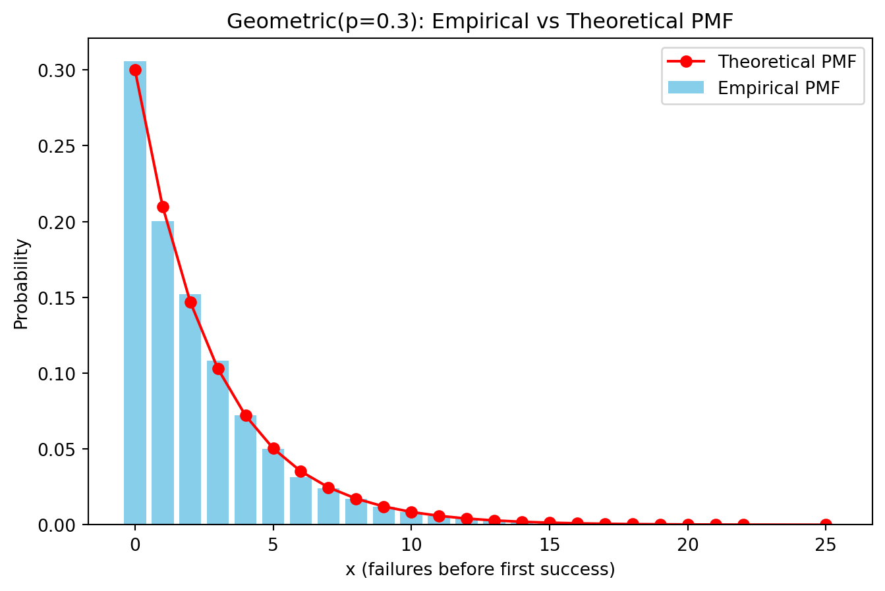
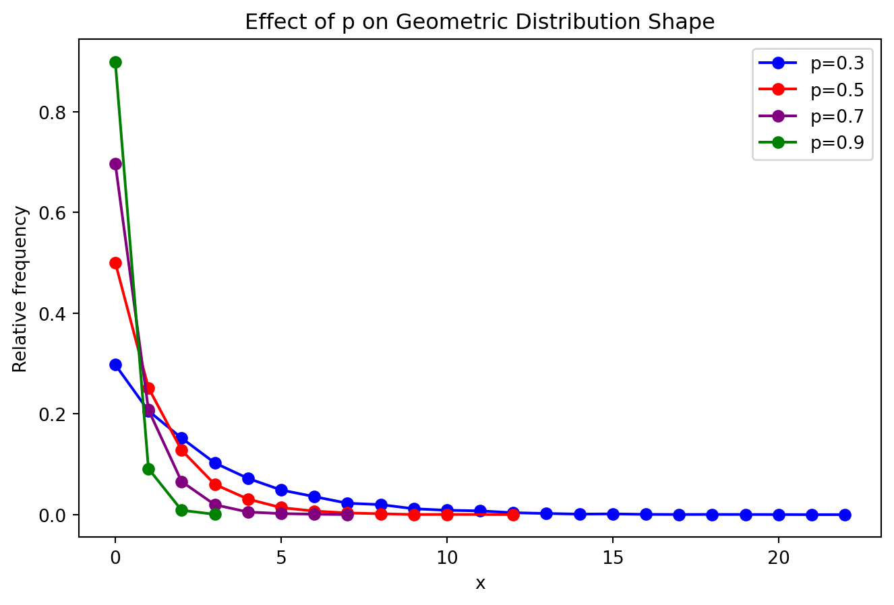
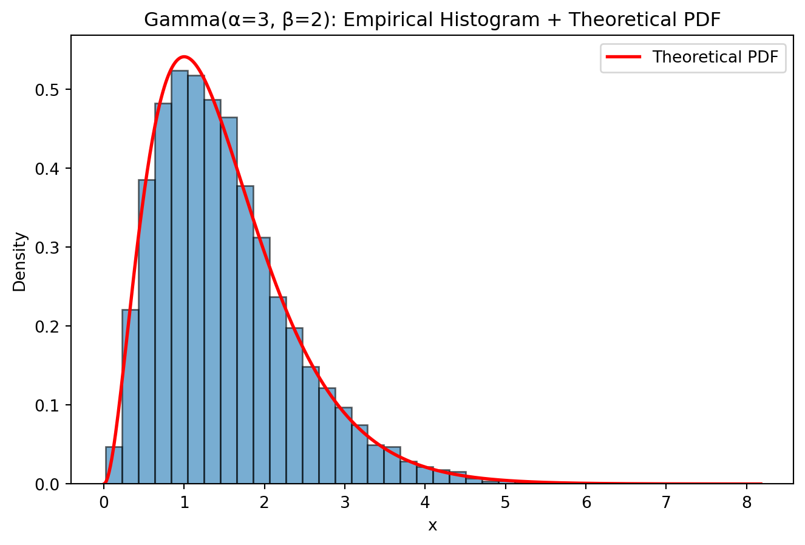
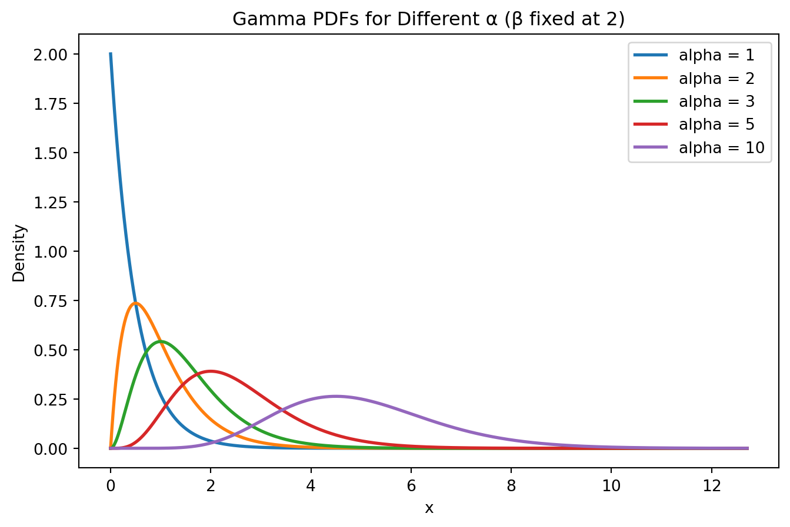
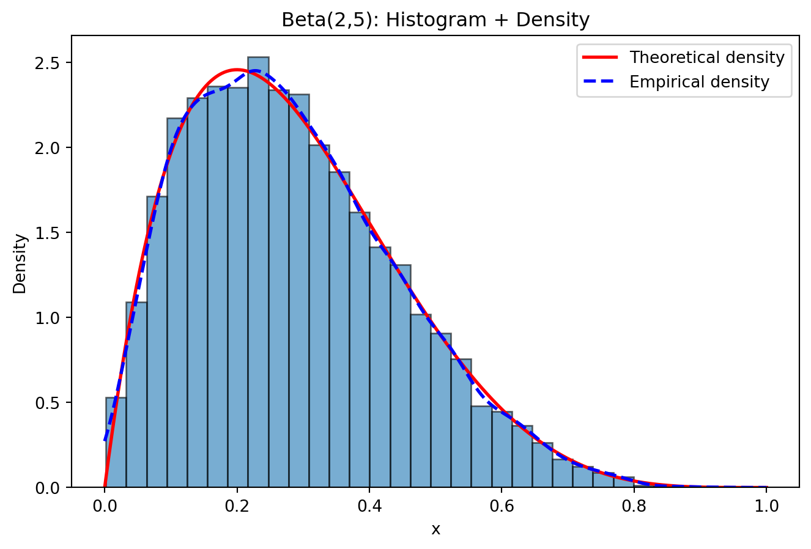
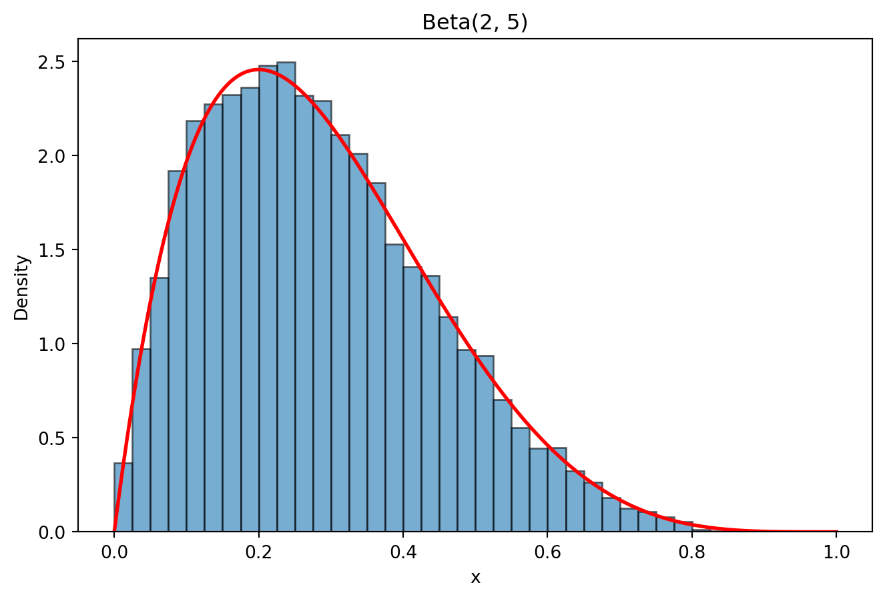
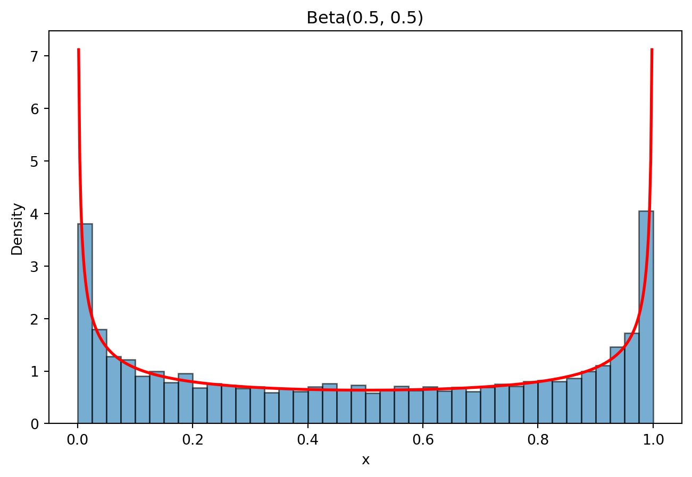
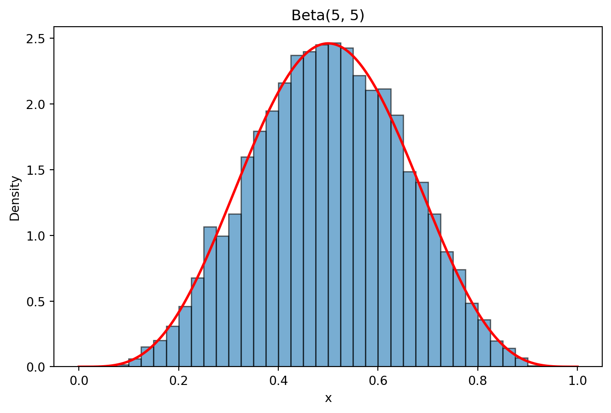
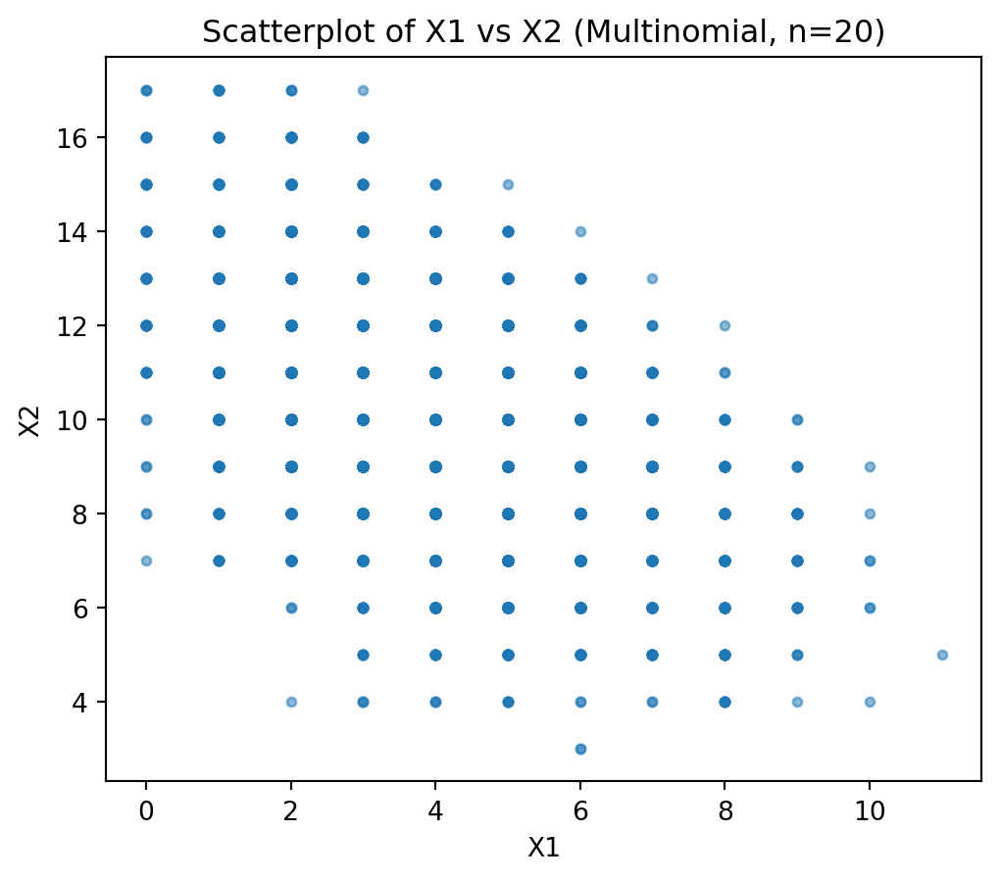

import numpy as np
from scipy.stats import geom
import matplotlib.pyplot as plt
np.random.seed(123)
n = 10000
p = 0.3
# scipy.stats.geom uses support {1,2,3,...} for "trial of first success"
# So subtract 1 to match R's convention (number of failures).
x = geom.rvs(p, size=n) - 111 Python Workshop Solutions
This workshop consists of three parts:
- Part 1: Univariate distributions in simulation
- Part 2: Joint distributions and dependence
- Part 3: Transformation of a single random variable
Key scipy.stats Functions for Univariate Distributions
In Python, a package scipy.stats provides the probability‑distribution machinery, and matplotlib provides the plotting layer, so together they let you both generate random variables from any univariate distribution and visualise their empirical behaviour against theoretical curves.
With scipy.stats, each distribution comes with methods for simulation (.rvs()), probability mass/density evaluation (.pmf(), .pdf()), and cumulative or survival functions (.cdf(), .sf()), which makes it easy to reproduce the same workflows you would do in R.
| Distribution | PMF/PDF Function | CDF Function | Random Generation (rvs) |
Notes |
|---|---|---|---|---|
| Bernoulli | bernoulli.pmf(x, p) |
bernoulli.cdf(x, p) |
bernoulli.rvs(p, size=n) |
Support {0,1} |
| Binomial | binom.pmf(x, n, p) |
binom.cdf(x, n, p) |
binom.rvs(n, p, size=n) |
Number of successes in n trials |
| Geometric | geom.pmf(x, p) |
geom.cdf(x, p) |
geom.rvs(p, size=n) |
SciPy uses support {1,2,…}; subtract 1 for “failures before success” |
| Negative Binomial | nbinom.pmf(x, r, p) |
nbinom.cdf(x, r, p) |
nbinom.rvs(r, p, size=n) |
Counts failures before r successes |
| Poisson | poisson.pmf(x, λ) |
poisson.cdf(x, λ) |
poisson.rvs(λ, size=n) |
Mean = variance = λ |
| Multinomial | multinomial.pmf(x, n, p) |
No closed-form CDF | multinomial.rvs(n, p, size=k) |
Vector-valued counts |
| Uniform | uniform.pdf(x, loc, scale) |
uniform.cdf(x, loc, scale) |
uniform.rvs(loc, scale, size=n) |
On interval ([loc, loc+scale]) |
| Exponential | expon.pdf(x, scale=1/λ) |
expon.cdf(x, scale=1/λ) |
expon.rvs(scale=1/λ, size=n) |
Memoryless continuous distribution |
| Gamma | gamma.pdf(x, a, scale) |
gamma.cdf(x, a, scale) |
gamma.rvs(a, scale, size=n) |
Shape a, scale θ |
| Normal | norm.pdf(x, μ, σ) |
norm.cdf(x, μ, σ) |
norm.rvs(μ, σ, size=n) |
Gaussian distribution |
| Log-normal | lognorm.pdf(x, s, scale) |
lognorm.cdf(x, s, scale) |
lognorm.rvs(s, scale, size=n) |
s = σ of underlying normal |
| Beta | beta.pdf(x, a, b) |
beta.cdf(x, a, b) |
beta.rvs(a, b, size=n) |
Support on (0,1) |
Once you generate samples, matplotlib handles the visualisation: bar plots for discrete PMFs, histograms for continuous densities, and line plots for overlaying theoretical curves. This combination mirrors the R workflow closely—scipy.stats plays the role of rgeom, dgeom, etc., while matplotlib plays the role of barplot, plot, and hist—and gives you a consistent, reproducible way to teach simulation, empirical vs theoretical comparison, and distributional intuition across all univariate distributions.
Part 1: Univariate distributions in simulation
Exercise 1: Geometric Distribution
Let \[X \sim \text{Geometric}(p),\] where \(p = 0.3\).
- Simulate 10,000 observations.
- Plot the empirical PMF (barplot of relative frequencies).
- Overlay the theoretical PMF.
- Compute:
- empirical mean and variance
- theoretical mean and variance
- Explain:
- Why is the geometric distribution memoryless? Verify: \(P(X>s+t | X>s)=P(X>t)\)
- How does changing \(p\) affect skewness?
- Estimate \(P(X > 5)\) analytically and via simulation. Compare results.
Solution
- Simulate 10,000 observations.
- Plot the empirical PMF (barplot of relative frequencies).
- Overlay the theoretical PMF.
# empirical PMF
vals, counts = np.unique(x, return_counts=True)
emp_pmf = counts / n
# theoretical PMF for same x-range
theo_pmf = geom.pmf(vals + 1, p) # +1 because scipy's geom starts at 1
plt.figure(figsize=(8,5))
plt.bar(vals, emp_pmf, color="skyblue", label="Empirical PMF")
plt.plot(vals, theo_pmf, "ro-", label="Theoretical PMF")
plt.xlabel("x (failures before first success)")
plt.ylabel("Probability")
plt.title("Geometric(p=0.3): Empirical vs Theoretical PMF")
plt.legend()
plt.show()
Empirical PMF closely matches theoretical PMF.
- Compute:
- empirical mean and variance
- theoretical mean and variance
# empirical
emp_mean = np.mean(x)
emp_var = np.var(x, ddof=1)
# theoretical (R-style parameterization)
theo_mean = (1 - p) / p
theo_var = (1 - p) / (p**2)
print("Empirical mean:", emp_mean)
print("Empirical variance:", emp_var)
print("Theoretical mean:", theo_mean)
print("Theoretical variance:", theo_var)Empirical mean: 2.2958
Empirical variance: 7.378440204020402
Theoretical mean: 2.3333333333333335
Theoretical variance: 7.777777777777778- The reason empirical mean (and variance) are close to the theoretical values is due to the Law of Large Numbers (LLN).
- Variance closeness is also due to consistency (LLN applied to functions of X).
- Explain:
- Why is the geometric distribution memoryless? Verify: \(P(X>s+t | X>s)=P(X>t)\)
- How does changing \(p\) affect skewness?
Using conditional probability:
\[ P(X>s+t \mid X>s) = \frac{P(X>s+t)}{P(X>s)}, \]
and mean(x >= k) to estimate P(X>k)
s = 3
t = 4
lhs = np.mean(x >= (s + t)) / np.mean(x >= s)
rhs = np.mean(x >= t)
print("LHS (simulated):", lhs)
print("RHS (simulated):", rhs)LHS (simulated): 0.23436586791350086
RHS (simulated): 0.234Mathematically, for a geometric distribution:
\[ P(X>k) = (1-p)^{k+1}, \]
So,
\[ \frac{P(X>s+t)}{P(X>s)} = \frac{(1-p)^{s+t+1}}{(1-p)^{s+1}} = (1-p)^t = P(X>t) \]
The cancellation is why memorylessness holds.
# Effect of changing p
ps = [0.3, 0.5, 0.7, 0.9]
colors = ["blue", "red", "purple", "green"]
plt.figure(figsize=(8,5))
for i, p_i in enumerate(ps):
x_i = geom.rvs(p_i, size=n) - 1
vals_i, counts_i = np.unique(x_i, return_counts=True)
pmf_i = counts_i / n
if i == 0:
plt.plot(vals_i, pmf_i, "o-", color=colors[i], label=f"p={p_i}")
else:
plt.plot(vals_i, pmf_i, "o-", color=colors[i], label=f"p={p_i}")
plt.xlabel("x")
plt.ylabel("Relative frequency")
plt.title("Effect of p on Geometric Distribution Shape")
plt.legend()
plt.show()
Increasing \(p\) makes the curve shift left and decay faster, concentrating more probability at small values (especially at 0).
- Estimate \(P(X > 5)\) analytically and via simulation. Compare results.
k = 5
analytic_prob = (1 - p)**(k + 1)
sim_prob = np.mean(x > k)
print("Analytic P(X>5):", analytic_prob)
print("Simulated P(X>5):", sim_prob)Analytic P(X>5): 0.11764899999999996
Simulated P(X>5): 0.1115We are verifying that the simulated tail probability matches the theoretical geometric survival probability \(P(X>5) = (1-p)^{5+1} = 0.117649\).
Exercise 2: Gamma Distribution
Let \[X \sim \text{Gamma}(\alpha = 3, \beta = 2)\] (Use shape–rate parameterisation.)
- Simulate 10,000 observations.
- Plot histogram with theoretical density overlay.
- Compute empirical vs theoretical mean and variance.
- Investigate how changing \(\alpha\) affects:
- skewness
- tail behaviour
Solution
- Simulate 10,000 observations.
from scipy.stats import gamma
np.random.seed(123)
n = 10000
alpha = 3
beta = 2 # rate
scale = 1 / beta # SciPy uses scale = 1/rate
x = gamma.rvs(a=alpha, scale=scale, size=n)- Plot histogram with theoretical density overlay.
plt.figure(figsize=(8,5))
# histogram as density
plt.hist(x, bins=40, density=True, alpha=0.6, edgecolor='black')
# theoretical density on same range
xs = np.linspace(0, x.max(), 500)
pdf_vals = gamma.pdf(xs, a=alpha, scale=scale)
plt.plot(xs, pdf_vals, 'r-', lw=2, label='Theoretical PDF')
plt.xlabel("x")
plt.ylabel("Density")
plt.title("Gamma(α=3, β=2): Empirical Histogram + Theoretical PDF")
plt.legend()
plt.show()
- Compute empirical vs theoretical mean and variance.
emp_mean = np.mean(x)
emp_var = np.var(x, ddof=1)
theo_mean = alpha / beta
theo_var = alpha / (beta**2)
print("Empirical mean:", emp_mean)
print("Theoretical mean:", theo_mean)
print("Empirical variance:", emp_var)
print("Theoretical variance:", theo_var)Empirical mean: 1.5100165009253022
Theoretical mean: 1.5
Empirical variance: 0.7485340154615578
Theoretical variance: 0.75With large \(n\), the empirical values should be very close.
- Investigate how changing \(\alpha\) affects:
- skewness
- tail behaviour
np.random.seed(123)
alphas = [1, 2, 3, 5, 10]
beta = 2
scale = 1 / beta
n = 10000
# simulate samples for each alpha
samples = [gamma.rvs(a=a, scale=scale, size=n) for a in alphas]
# common x-grid for plotting
xmax = max(s.max() for s in samples)
xs = np.linspace(0, xmax, 1000)
plt.figure(figsize=(8,5))
for i, a in enumerate(alphas):
pdf_vals = gamma.pdf(xs, a=a, scale=scale)
plt.plot(xs, pdf_vals, lw=2, label=f"alpha = {a}")
plt.xlabel("x")
plt.ylabel("Density")
plt.title("Gamma PDFs for Different α (β fixed at 2)")
plt.legend()
plt.show()
With \(\beta\) fixed, increasing \(\alpha\) has the following effects:
- Skewness decreases (more “bell-shaped”).
- Tail becomes less extreme relative to the center.
- The distribution concentrates more around its mean (and looks more normal-like), so very large values become less common relative to the bulk.
Exercise 3: Beta Distribution
Let \[X \sim \text{Beta}(2,5).\]
- Simulate 10,000 observations.
- Plot histogram and density.
- Compute mean and variance.
- Repeat for:
- Beta(0.5, 0.5)
- Beta(5, 5)
- How do the shape parameters affect:
- symmetry?
- concentration?
- boundary behaviour?
Solution
- Simulate 10,000 observations.
import numpy as np
import matplotlib.pyplot as plt
from scipy.stats import beta
np.random.seed(123)
n = 10000
a, b = 2, 5
x = beta.rvs(a, b, size=n)- Plot histogram and density.
plt.figure(figsize=(8,5))
# histogram as density
plt.hist(x, bins=30, density=True, alpha=0.6, edgecolor='black')
# theoretical density
xs = np.linspace(0, 1, 500)
pdf_vals = beta.pdf(xs, a, b)
plt.plot(xs, pdf_vals, 'r-', lw=2, label='Theoretical density')
# empirical density estimate
from scipy.stats import gaussian_kde
kde = gaussian_kde(x)
plt.plot(xs, kde(xs), 'b--', lw=2, label='Empirical density')
plt.xlabel("x")
plt.ylabel("Density")
plt.title("Beta(2,5): Histogram + Density")
plt.legend()
plt.show()
- Compute mean and variance.
emp_mean = np.mean(x)
emp_var = np.var(x, ddof=1)
theo_mean = a / (a + b)
theo_var = (a * b) / ((a + b)**2 * (a + b + 1))
print("Empirical mean:", emp_mean)
print("Theoretical mean:", theo_mean)
print("Empirical variance:", emp_var)
print("Theoretical variance:", theo_var)Empirical mean: 0.28388702893411
Theoretical mean: 0.2857142857142857
Empirical variance: 0.025079505260659093
Theoretical variance: 0.025510204081632654- Repeat for:
- Beta(0.5, 0.5)
- Beta(5, 5)
def run_beta(a, b, n=10000, seed=123):
np.random.seed(seed)
x = beta.rvs(a, b, size=n)
plt.figure(figsize=(8,5))
plt.hist(x, bins=40, density=True, alpha=0.6, edgecolor='black',
range=(0,1))
xs = np.linspace(0, 1, 500)
plt.plot(xs, beta.pdf(xs, a, b), 'r-', lw=2)
plt.title(f"Beta({a}, {b})")
plt.xlabel("x")
plt.ylabel("Density")
plt.show()
emp_mean = np.mean(x)
emp_var = np.var(x, ddof=1)
theo_mean = a / (a + b)
theo_var = (a * b) / ((a + b)**2 * (a + b + 1))
print(f"\nBeta({a}, {b})")
print("Empirical mean:", emp_mean, " Theoretical mean:", theo_mean)
print("Empirical var :", emp_var, " Theoretical var :", theo_var)
run_beta(2, 5)
run_beta(0.5, 0.5)
run_beta(5, 5)
Beta(2, 5)
Empirical mean: 0.28388702893411 Theoretical mean: 0.2857142857142857
Empirical var : 0.025079505260659093 Theoretical var : 0.025510204081632654
Beta(0.5, 0.5)
Empirical mean: 0.5023044733845982 Theoretical mean: 0.5
Empirical var : 0.1243420507711425 Theoretical var : 0.125
Beta(5, 5)
Empirical mean: 0.5018933069915179 Theoretical mean: 0.5
Empirical var : 0.022669247459073824 Theoretical var : 0.022727272727272728- How do the shape parameters affect:
- symmetry?
- concentration?
- boundary behaviour?
Symmetry
The Beta distribution is symmetric if and only if \(\alpha = \beta.\)
- If \(\alpha = \beta\) → symmetric around \(0.5\).
- If \(\alpha < \beta\) → distribution is skewed toward 0.
- If \(\alpha > \beta\) → distribution is skewed toward 1.
From 4):
- \(\text{Beta}(5,5)\) → symmetric and bell-shaped.
- \(\text{Beta}(2,5)\) → skewed toward 0.
- \(\text{Beta}(0.5,0.5)\) → symmetric but U-shaped.
Concentration (Spread Around the Mean)
The variance is:
\[ \mathrm{Var}(X) = \frac{\alpha \beta}{(\alpha + \beta)^2 (\alpha + \beta + 1)}. \]
As \(\alpha + \beta\) increases:
- The variance decreases.
- The distribution becomes more concentrated around the mean.
Thus:
- Large \(\alpha + \beta\) → tightly concentrated.
- Small \(\alpha + \beta\) → more spread out.
Boundary Behaviour (Near 0 and 1)
The density near the boundaries depends on whether parameters are less than 1.
Near 0:
- If \(\alpha < 1\) → density \(\to \infty\) at 0.
- If \(\alpha = 1\) → finite nonzero value at 0.
- If \(\alpha > 1\) → density \(\to 0\) at 0.
Near 1:
- If \(\beta < 1\) → density \(\to \infty\) at 1.
- If \(\beta = 1\) → finite nonzero value at 1.
- If \(\beta > 1\) → density \(\to 0\) at 1.
Examples:
- \(\text{Beta}(0.5,0.5)\) → spikes at both 0 and 1 (U-shaped).
- \(\text{Beta}(5,5)\) → zero at both boundaries, peak at 0.5.
- \(\text{Beta}(2,5)\) → zero at boundaries, skewed toward 0.
Exercise 4: Multinomial Distribution
Let
\[(X_1, X_2, X_3) \sim \text{Multinomial}(n=20, p=(0.2,0.5,0.3))\]
- Simulate 5,000 independent multinomial experiments.
- Compute:
- sample means of each component
- covariance matrix
- Verify: \(E[X_i] = np_i\)
- Verify that components are negatively correlated.
- Visualisation
- Scatterplot of \(X_1\) vs \(X_2\)
- Comment on dependence structure.
- Conceptual Question: Why must multinomial components be dependent?
Solution
- Simulate 5,000 independent multinomial experiments.
import numpy as np
import matplotlib.pyplot as plt
from scipy.stats import multinomial
np.random.seed(123)
B = 5000
n = 20
p = np.array([0.2, 0.5, 0.3])
# each row = one experiment, each column = X1, X2, X3
X = multinomial.rvs(n=n, p=p, size=B)- Compute:
- sample means of each component
- covariance matrix
# sample means of each component
sample_means = X.mean(axis=0)
print("Sample means:", sample_means)
# sample covariance matrix
sample_cov = np.cov(X, rowvar=False)
print("Sample covariance matrix:\n", sample_cov)Sample means: [ 3.9878 10.03 5.9822]
Sample covariance matrix:
[[ 3.1266765 -1.94962392 -1.17705257]
[-1.94962392 4.93968794 -2.99006401]
[-1.17705257 -2.99006401 4.16711658]]By LLN, sample means (empirical averages) are close to:
\[ E[X_i] = np_i \]
- \(20 \times 0.2 = 4,\)
- \(20 \times 0.5 = 10,\)
- \(20 \times 0.3 = 6,\)
and the covariance matrix is in the form of:
\[ \begin{pmatrix} \mathrm{Var}(X_1) & \mathrm{Cov}(X_1,X_2) & \mathrm{Cov}(X_1,X_3) \\ \mathrm{Cov}(X_2,X_1) & \mathrm{Var}(X_2) & \mathrm{Cov}(X_2,X_3) \\ \mathrm{Cov}(X_3,X_1) & \mathrm{Cov}(X_3,X_2) & \mathrm{Var}(X_3) \end{pmatrix} \]
- In theory, \(Var(X_i)=np_i(1-p_i) > 0\).
- For covariance, \(Cov(X_i, X_j) = -np_ip_j \quad(i\neq j)\).
- Covariances are negative because an increase in \(X_i\) must result in a decrease in \(X_j, (i\neq j)\).
- Since the variables move in opposite directions, we have negative covariance.
- Verify: \(E[X_i] = np_i\)
theo_means = n * p
np.column_stack((sample_means, theo_means))array([[ 3.9878, 4. ],
[10.03 , 10. ],
[ 5.9822, 6. ]])- Verify that components are negatively correlated.
sample_cor = np.corrcoef(X, rowvar=False)
print("Sample correlation matrix:\n", sample_cor)Sample correlation matrix:
[[ 1. -0.49608902 -0.32608931]
[-0.49608902 1. -0.65904171]
[-0.32608931 -0.65904171 1. ]]Note that:
\[ \mathrm{Corr}(X_i, X_i)=\frac{\mathrm{Cov}(X_i, X_i)} {\sqrt{\mathrm{Var}(X_i)\mathrm{Var}(X_i)}} \]
- The covariance matrix measures joint variability in original units, while the correlation matrix standardises this to measure pure strength of linear dependence on a -1 to 1 scale.
- In a correlation matrix, the diagonal entries are always 1, because a variable is perfectly positively linearly related to itself.
- Visualisation
- Scatterplot of \(X_1\) vs \(X_2\)
- Comment on dependence structure.
plt.figure(figsize=(6,5))
plt.scatter(X[:,0], X[:,1], alpha=0.5, s=12)
plt.xlabel("X1")
plt.ylabel("X2")
plt.title("Scatterplot of X1 vs X2 (Multinomial, n=20)")
plt.show()
You should see a downward trend. When \(X_1\) is large, \(X_2\) tends to be smaller (and vice versa).
Also, the points lie within feasible integer bounds, especially because:
\[ X_1+X_2+X_3=20. \]
So not every pair \((X_1,X_2)\) is possible; they’re constrained by the remaining count for \(X_3\).
- Conceptual Question: Why must multinomial components be dependent?
Because the components must sum to a fixed total:
\[ X_1+X_2+X_3=n. \]
So if one component increases, at least one of the others must decrease to keep the sum equal to \(n\). This fixed-sum constraint forces dependence and typically creates negative correlations between different categories.